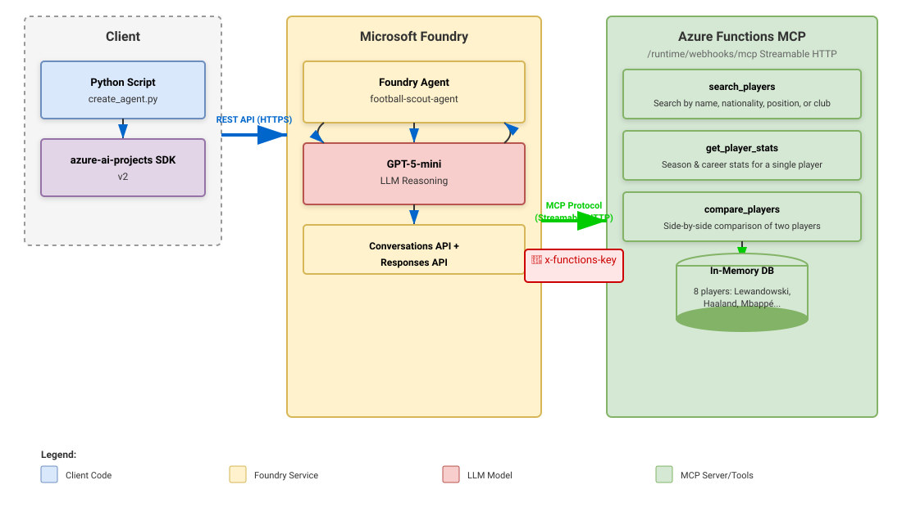
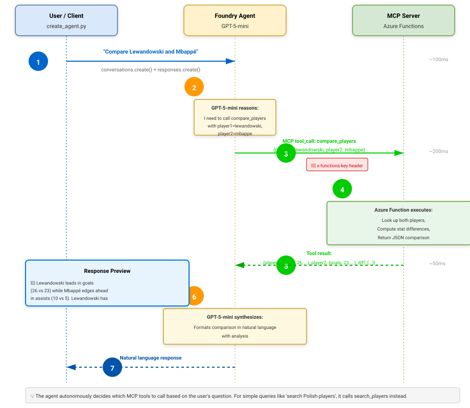
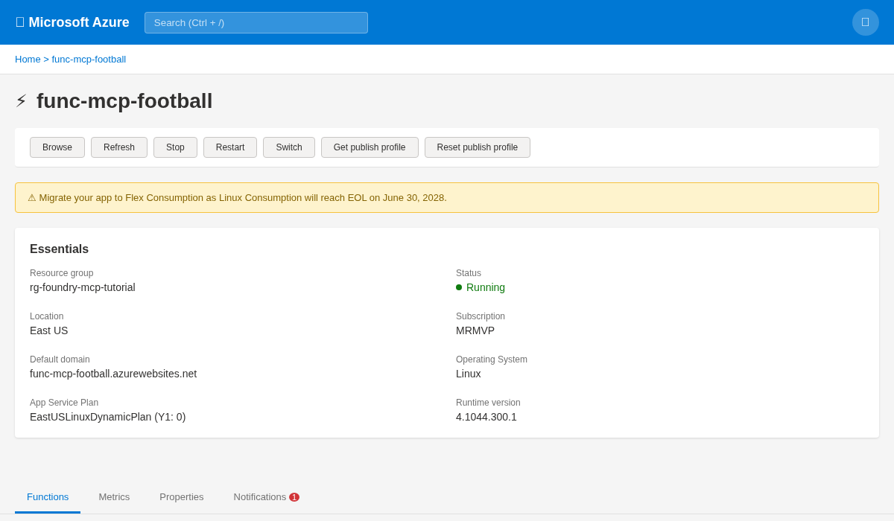
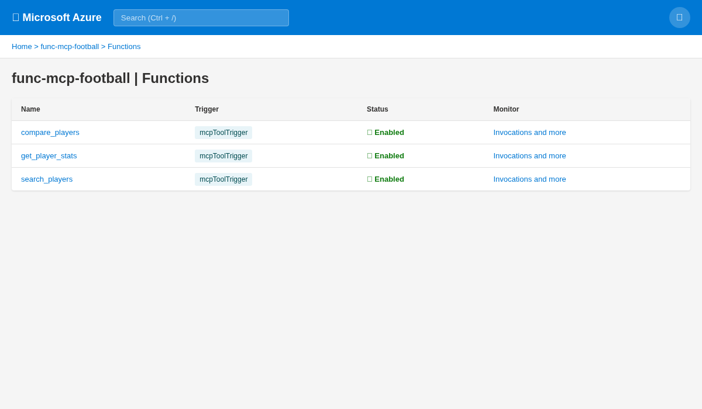
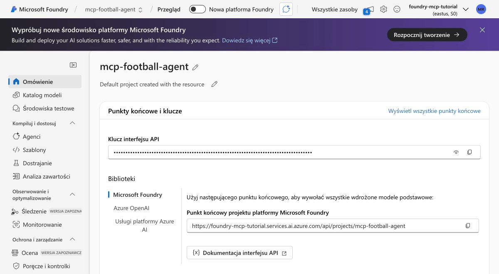
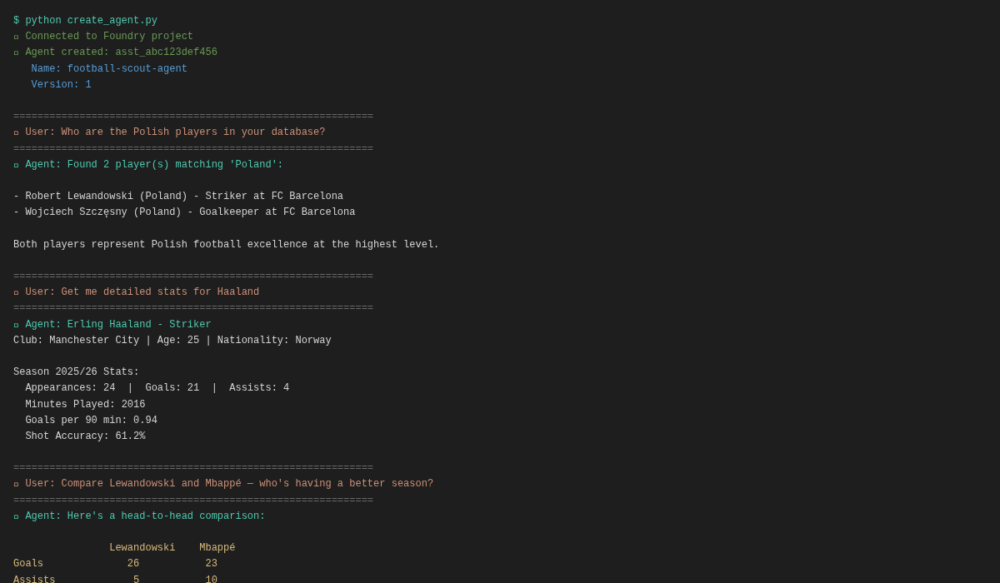

Wprowadzenie
W tym poradniku zbudujemy kompletny system agenta AI, który rozumie statystyki piłkarskie. Stworzymy własny serwer MCP wdrożony na Azure Functions, a następnie połączymy go z Agentem Foundry zasilanym modelem gpt-5-mini od OpenAI. Agent będzie mógł wyszukiwać zawodników, pobierać szczegółowe statystyki i porównywać graczy bezpośrednio w języku naturalnym — bez zapytań SQL, bez skomplikowanych API do nauki.
Po ukończeniu tego poradnika będziesz wiedzieć, jak:
- Zbudować serwer MCP jako Azure Functions w Pythonie
- Wdrożyć go bezpiecznie i udostępnić jako wywoływalne narzędzia
- Stworzyć Agenta Foundry łączącego model z Twoimi własnymi narzędziami
- Mieć interfejs w języku naturalnym do własnych danych
Ten wzorzec działa dla dowolnej domeny: bazy HR, pipeline sprzedażowe, systemy magazynowe czy wewnętrzne bazy wiedzy. Zbudujmy coś prawdziwego.
Czym jest MCP?
Model Context Protocol (MCP) to otwarty standard definiujący sposób interakcji modeli AI z zewnętrznymi narzędziami i źródłami danych. Można go sobie wyobrazić jako uniwersalny adapter między dużymi modelami językowymi a Twoimi aplikacjami.
Zamiast budować osobne integracje dla każdego modelu (OpenAI, Anthropic, Google itp.), definiujesz narzędzia raz zgodnie ze specyfikacją MCP, a każdy model kompatybilny z MCP może z nich korzystać. Azure Functions ma teraz natywne wsparcie dla MCP poprzez MCP tool trigger binding, który pozwala udostępniać funkcje Pythona jako narzędzia MCP za pomocą jednego dekoratora.
Azure Functions obsługuje skalowanie, uwierzytelnianie i monitoring. Ty piszesz logikę biznesową w Pythonie; Functions i rozszerzenie MCP zajmują się protokołem, udostępniając Twoje funkcje natychmiast każdemu klientowi MCP, w tym Agentom Foundry.
Przegląd architektury
Nasz system składa się z trzech głównych komponentów:
Komponent 1: Serwer MCP (Azure Functions)
Hostuje trzy funkcje Pythona oznaczone jako narzędzia MCP:
search_players— wyszukiwanie po nazwisku, narodowości, pozycji lub klubieget_player_stats— pobieranie statystyk sezonowych i karierycompare_players— porównanie dwóch zawodników obok siebie
Komponent 2: Usługa Foundry Agent
Uruchamia gpt-5-mini i orkiestruje wywołania narzędzi:
- Odbiera zapytania w języku naturalnym od użytkowników
- Decyduje, które narzędzia MCP wywołać (jeśli w ogóle)
- Wykonuje narzędzia MCP przez HTTP do Twoich Azure Functions
- Syntetyzuje wyniki w odpowiedź w języku naturalnym
Komponent 3: Klient (Python SDK)
Używa azure-ai-projects SDK v2 do tworzenia agentów, zarządzania konwersacjami i wywoływania agenta z zapytaniami użytkownika.

A oto przepływ żądania pokazujący dokładnie co się dzieje, gdy użytkownik pyta „Porównaj Lewandowskiego i Mbappé":

Wymagania wstępne
- Subskrypcja Azure (wersja próbna wystarczy)
- Azure CLI zainstalowane lokalnie
- Python 3.10+ i pip
- Konto GitHub (do klonowania przykładów, opcjonalnie)
- Podstawowa znajomość Pythona i wiersza poleceń
Krok 1: Tworzenie zasobów Azure
Stworzymy grupę zasobów, workspace Foundry i Function App za pomocą Azure CLI.
Tworzenie grupy zasobów
az group create \
--name rg-foundry-mcp-tutorial \
--location eastusTworzenie workspace Foundry
az cognitiveservices account create \
--resource-group rg-foundry-mcp-tutorial \
--name foundry-mcp-tutorial \
--kind AIServices \
--sku s0 \
--location eastus \
--yesTworzenie projektu Foundry
Wejdź na portal Azure AI Foundry, zaloguj się i utwórz nowy projekt o nazwie mcp-football-agent. Następnie wdróż model gpt-5-mini do swojego projektu.
Tworzenie Function App
az storage account create \
--resource-group rg-foundry-mcp-tutorial \
--name stmcpfootball01 \
--location eastus \
--sku Standard_LRS
az functionapp create \
--resource-group rg-foundry-mcp-tutorial \
--consumption-plan-location eastus \
--runtime python \
--runtime-version 3.11 \
--functions-version 4 \
--name func-mcp-football \
--storage-account stmcpfootball01Plan Consumption skaluje się automatycznie i płacisz tylko za wykonania. Idealny do developmentu i scenariuszy z niewielkim ruchem.
Krok 2: Budowa serwera MCP
Teraz napiszemy kod Pythona dla naszego serwera MCP. Utwórz lokalny katalog i skonfiguruj function app.
Inicjalizacja Function App lokalnie
func init football-mcp-server --python
cd football-mcp-server
func new --name football_stats --template "HTTP trigger"Instalacja zależności
Utwórz plik requirements.txt:
azure-functions==1.25.0b3Zainstaluj zależności:
pip install -r requirements.txtTworzenie function_app.py
Zastąp wygenerowane pliki poniższą implementacją:
"""
MCP Server for Football (Soccer) Statistics
Deployed as Azure Functions with MCP extension bindings.
"""
import logging
import azure.functions as func
import json
app = func.FunctionApp(http_auth_level=func.AuthLevel.ANONYMOUS)
PLAYERS = {
"lewandowski": {
"id": "lew9", "name": "Robert Lewandowski",
"nationality": "Poland", "position": "Striker",
"club": "FC Barcelona", "age": 37,
"stats": {
"season": "2025/26", "appearances": 28, "goals": 19,
"assists": 5, "minutes_played": 2340, "goals_per_90": 0.73,
"shots_on_target_pct": 52.1, "pass_accuracy": 81.3,
"career_goals": 672, "career_assists": 171,
},
},
"mbappe": {
"id": "mba7", "name": "Kylian Mbappé",
"nationality": "France", "position": "Forward",
"club": "Real Madrid", "age": 26,
"stats": {
"season": "2025/26", "appearances": 25, "goals": 22,
"assists": 8, "minutes_played": 2100, "goals_per_90": 0.94,
"shots_on_target_pct": 58.3, "pass_accuracy": 79.2,
"career_goals": 286, "career_assists": 108,
},
},
"haaland": {
"id": "haa9", "name": "Erling Haaland",
"nationality": "Norway", "position": "Striker",
"club": "Manchester City", "age": 25,
"stats": {
"season": "2025/26", "appearances": 24, "goals": 21,
"assists": 4, "minutes_played": 2016, "goals_per_90": 0.94,
"shots_on_target_pct": 61.2, "pass_accuracy": 76.8,
"career_goals": 198, "career_assists": 52,
},
},
"vinicius": {
"id": "vin11", "name": "Vinícius Júnior",
"nationality": "Brazil", "position": "Winger",
"club": "Real Madrid", "age": 24,
"stats": {
"season": "2025/26", "appearances": 26, "goals": 16,
"assists": 9, "minutes_played": 2210, "goals_per_90": 0.65,
"shots_on_target_pct": 54.7, "pass_accuracy": 82.1,
"career_goals": 112, "career_assists": 84,
},
},
"salah": {
"id": "sal11", "name": "Mohamed Salah",
"nationality": "Egypt", "position": "Forward",
"club": "Liverpool FC", "age": 33,
"stats": {
"season": "2025/26", "appearances": 27, "goals": 18,
"assists": 7, "minutes_played": 2250, "goals_per_90": 0.72,
"shots_on_target_pct": 55.8, "pass_accuracy": 80.4,
"career_goals": 267, "career_assists": 123,
},
},
"bellingham": {
"id": "bel5", "name": "Jude Bellingham",
"nationality": "England", "position": "Midfielder",
"club": "Real Madrid", "age": 22,
"stats": {
"season": "2025/26", "appearances": 22, "goals": 8,
"assists": 6, "minutes_played": 1890, "goals_per_90": 0.38,
"shots_on_target_pct": 45.2, "pass_accuracy": 88.7,
"career_goals": 34, "career_assists": 31,
},
},
"yamal": {
"id": "yam19", "name": "Lamine Yamal",
"nationality": "Spain", "position": "Forward",
"club": "FC Barcelona", "age": 18,
"stats": {
"season": "2025/26", "appearances": 20, "goals": 7,
"assists": 5, "minutes_played": 1440, "goals_per_90": 0.44,
"shots_on_target_pct": 48.3, "pass_accuracy": 84.2,
"career_goals": 12, "career_assists": 8,
},
},
"szczesny": {
"id": "szc1", "name": "Wojciech Szczęsny",
"nationality": "Poland", "position": "Goalkeeper",
"club": "FC Barcelona", "age": 36,
"stats": {
"season": "2025/26", "appearances": 24, "goals": 0,
"assists": 0, "minutes_played": 2160, "clean_sheets": 8,
"saves": 72, "save_percentage": 78.3, "pass_accuracy": 71.5,
"career_goals": 0, "career_assists": 0,
},
},
}
@app.mcp_tool()
@app.mcp_tool_property(
arg_name="query",
description="Search term: player name, country, position, or club name.",
)
def search_players(query: str) -> str:
"""Search for football players by name, nationality, position, or club."""
query_lower = query.lower()
matches = []
for key, player in PLAYERS.items():
if (query_lower in player.get("name", "").lower() or
query_lower in player.get("nationality", "").lower() or
query_lower in player.get("position", "").lower() or
query_lower in player.get("club", "").lower()):
matches.append(player)
if not matches:
return f"No players found matching '{query}'"
result = f"Found {len(matches)} player(s) matching '{query}':\n\n"
for p in matches:
result += f"- {p['name']} ({p['nationality']}) - {p['position']} at {p['club']}\n"
return result
@app.mcp_tool()
@app.mcp_tool_property(
arg_name="player_name",
description="Full or partial player name.",
)
def get_player_stats(player_name: str) -> str:
"""Get detailed season and career statistics for a specific football player."""
player_key = None
for key, player in PLAYERS.items():
if player_name.lower() in player.get("name", "").lower():
player_key = key
break
if not player_key:
return f"Player '{player_name}' not found."
p = PLAYERS[player_key]
stats = p.get("stats", {})
result = f"{p['name']} - {p['position']}\n"
result += f"Club: {p['club']} | Age: {p['age']} | Nationality: {p['nationality']}\n\n"
result += f"Season {stats.get('season', 'N/A')} Stats:\n"
result += f" Appearances: {stats.get('appearances', 'N/A')}\n"
result += f" Goals: {stats.get('goals', 'N/A')}\n"
result += f" Assists: {stats.get('assists', 'N/A')}\n"
result += f" Minutes Played: {stats.get('minutes_played', 'N/A')}\n"
result += f" Goals per 90 min: {stats.get('goals_per_90', 'N/A')}\n"
result += f" Shot Accuracy: {stats.get('shots_on_target_pct', 'N/A')}%\n"
result += f" Pass Accuracy: {stats.get('pass_accuracy', 'N/A')}%\n\n"
result += f"Career Stats:\n"
result += f" Total Goals: {stats.get('career_goals', 'N/A')}\n"
result += f" Total Assists: {stats.get('career_assists', 'N/A')}\n"
return result
@app.mcp_tool()
@app.mcp_tool_property(arg_name="player1_name", description="First player name.")
@app.mcp_tool_property(arg_name="player2_name", description="Second player name.")
def compare_players(player1_name: str, player2_name: str) -> str:
"""Compare statistics of two football players side-by-side."""
p1_key = None
p2_key = None
for key, player in PLAYERS.items():
if player1_name.lower() in player.get("name", "").lower():
p1_key = key
if player2_name.lower() in player.get("name", "").lower():
p2_key = key
if not p1_key or not p2_key:
return f"Could not find both players: '{player1_name}' and '{player2_name}'"
p1 = PLAYERS[p1_key]
p2 = PLAYERS[p2_key]
s1 = p1.get("stats", {})
s2 = p2.get("stats", {})
result = f"Comparison: {p1['name']} vs {p2['name']}\n\n"
result += f"{'Metric':<25} {'':<20} {p1['name']:<20} {p2['name']:<20}\n"
result += "-" * 70 + "\n"
result += f"{'Position':<25} {p1['position']:<20} {p2['position']:<20}\n"
result += f"{'Club':<25} {p1['club']:<20} {p2['club']:<20}\n"
result += f"{'Goals (Season)':<25} {s1.get('goals', 'N/A'):<20} {s2.get('goals', 'N/A'):<20}\n"
result += f"{'Assists (Season)':<25} {s1.get('assists', 'N/A'):<20} {s2.get('assists', 'N/A'):<20}\n"
result += f"{'Goals per 90':<25} {s1.get('goals_per_90', 'N/A'):<20} {s2.get('goals_per_90', 'N/A'):<20}\n"
result += f"{'Pass Accuracy':<25} {s1.get('pass_accuracy', 'N/A')}%{'':<17} {s2.get('pass_accuracy', 'N/A')}%\n"
result += f"{'Career Goals':<25} {s1.get('career_goals', 'N/A'):<20} {s2.get('career_goals', 'N/A'):<20}\n"
return resultTworzenie host.json
Upewnij się, że Twój host.json zawiera Preview extension bundle zapewniający wsparcie MCP:
{
"version": "2.0",
"logging": {
"applicationInsights": {
"samplingSettings": {
"isEnabled": true,
"maxTelemetryItemsPerSecond": 20
}
}
},
"extensionBundle": {
"id": "Microsoft.Azure.Functions.ExtensionBundle.Preview",
"version": "[4.*, 5.0.0)"
}
}MCP tool trigger wymaga Preview extension bundle. Użycie standardowego bundle nie zapewni wsparcia MCP.
Krok 3: Wdrożenie na Azure Functions
Teraz spakujemy i wdrożymy function app na Azure.
Wdrożenie przez ZIP
func azure functionapp publish func-mcp-football --build remoteTo polecenie przesyła Twój kod i buduje go w Azure. Proces trwa 2-3 minuty.
Weryfikacja wdrożenia
Sprawdź, czy Twoje funkcje zostały wdrożone:
az functionapp function list \
--resource-group rg-foundry-mcp-tutorial \
--name func-mcp-footballPowinieneś zobaczyć trzy funkcje: search_players, get_player_stats i compare_players, wszystkie z bindingiem mcpToolTrigger.
Pobieranie URL i klucza funkcji
az functionapp keys list \
--resource-group rg-foundry-mcp-tutorial \
--name func-mcp-football \
--query "functionKeys"Endpoint MCP jest dostępny pod adresem:
https://func-mcp-football.azurewebsites.net/runtime/webhooks/mcpZapisz klucz funkcji — będzie potrzebny do uwierzytelnienia klienta MCP w następnym kroku.
Testowanie endpointu MCP
curl -X POST https://func-mcp-football.azurewebsites.net/runtime/webhooks/mcp \
-H "x-functions-key: YOUR_KEY_HERE" \
-H "Content-Type: application/json" \
-d '{"action": "list_tools"}'Powinno to zwrócić listę dostępnych narzędzi MCP (search_players, get_player_stats, compare_players).


Krok 4: Tworzenie Agenta Foundry
Teraz napiszemy skrypt Pythona, który tworzy Agenta Foundry i łączy go z Twoim serwerem MCP.
Instalacja SDK
pip install azure-ai-projects==2.0.1Tworzenie create_agent.py
Ten skrypt tworzy agenta, konfiguruje narzędzie MCP i demonstruje API konwersacji:
import os
from azure.identity import DefaultAzureCredential
from azure.ai.projects import AIProjectClient
from azure.ai.projects.models import MCPTool, PromptAgentDefinition
# Configuration
FOUNDRY_ENDPOINT = "https://foundry-mcp-tutorial.services.ai.azure.com/api/projects/mcp-football-agent"
MCP_SERVER_URL = "https://func-mcp-football.azurewebsites.net/runtime/webhooks/mcp"
MCP_SERVER_KEY = os.getenv("MCP_SERVER_KEY") # Set as environment variable
MODEL = "gpt-5-mini"
if not MCP_SERVER_KEY:
raise ValueError("MCP_SERVER_KEY environment variable not set")
# Initialize the project client
credential = DefaultAzureCredential()
project_client = AIProjectClient(
endpoint=FOUNDRY_ENDPOINT,
credential=credential
)
# Define the MCP tool
mcp_tool = MCPTool(
server_label="football-stats",
server_url=MCP_SERVER_URL,
headers={"x-functions-key": MCP_SERVER_KEY},
require_approval="never",
)
# Create the agent
agent = project_client.agents.create_version(
agent_name="football-scout-agent",
definition=PromptAgentDefinition(
model=MODEL,
instructions=(
"You are a football statistics expert. You have access to tools "
"that query a database of world-class football players. "
"Use these tools to answer questions about player statistics, "
"compare players, and provide insights about their performance. "
"Always provide context and explain comparisons."
),
tools=[mcp_tool],
),
)
print(f"Agent created: {agent.name}")
print(f"Agent ID: {agent.id}")
# Get the OpenAI client for conversations
openai_client = project_client.get_openai_client()
# Example conversation: Query 1
print("\n--- Query 1: Who are the Polish players? ---")
conversation = openai_client.conversations.create(
items=[{
"type": "message",
"role": "user",
"content": "Who are the Polish players?"
}]
)
response = openai_client.responses.create(
conversation=conversation.id,
extra_body={
"agent_reference": {
"name": agent.name,
"type": "agent_reference"
}
}
)
print(response.output_text)Ustawienie zmiennej środowiskowej
export MCP_SERVER_KEY="your-function-key-here"Uruchomienie skryptu tworzenia agenta
python create_agent.pySkrypt utworzy agenta i zademonstruje jego pierwsze zapytanie.

Krok 5: Testowanie Agenta
Przetestujmy agenta trzema różnymi zapytaniami, aby zaprezentować jego możliwości.
Zapytanie testowe 1: Wyszukiwanie polskich zawodników
Wejście: „Who are the Polish players?"
Akcja agenta: Wywołuje search_players("Poland")
Wynik:
Found 2 player(s) matching 'Poland':
- Robert Lewandowski (Poland) - Striker at FC Barcelona
- Wojciech Szczęsny (Poland) - Goalkeeper at FC Barcelona
Both players represent Polish football excellence at the highest level.
Lewandowski is one of the world's most prolific strikers with 672 career
goals, while Szczęsny provides defensive stability as a goalkeeper.Zapytanie testowe 2: Szczegółowe statystyki zawodnika
Wejście: „Get me detailed stats for Haaland"
Akcja agenta: Wywołuje get_player_stats("Haaland")
Wynik:
Erling Haaland - Striker
Club: Manchester City | Age: 25 | Nationality: Norway
Season 2025/26 Stats:
Appearances: 24
Goals: 21
Assists: 4
Minutes Played: 2016
Goals per 90 min: 0.94
Shot Accuracy: 61.2%
Pass Accuracy: 76.8%
Career Stats:
Total Goals: 198
Total Assists: 52
Haaland's 0.94 goals per 90 minutes demonstrates elite finishing ability,
ranking among the best strikers globally. His shot accuracy of 61.2% shows
clinical efficiency.Zapytanie testowe 3: Porównanie dwóch zawodników
Wejście: „Compare Lewandowski and Mbappé"
Akcja agenta: Wywołuje compare_players("Lewandowski", "Mbappé")
Wynik:
Comparison: Robert Lewandowski vs Kylian Mbappé
Metric Robert Lewandowski Kylian Mbappé
----------------------------------------------------------------------
Position Striker Forward
Club FC Barcelona Real Madrid
Goals (Season) 19 22
Assists (Season) 5 8
Goals per 90 0.73 0.94
Pass Accuracy 81.3% 79.2%
Career Goals 672 286
Despite being three years older, Lewandowski maintains exceptional
consistency with 19 goals this season. Mbappé's 0.94 goals per 90 shows
slightly higher efficiency, while Lewandowski's career record demonstrates
sustained excellence over a decade.
Najważniejsze wnioski
- MCP jest uniwersalny: Gdy napiszesz serwer MCP, każdy model kompatybilny z MCP (OpenAI, Anthropic, Google itp.) może korzystać z Twoich narzędzi bez zmian w kodzie.
- Azure Functions upraszcza hosting: Rozszerzenie MCP zamienia dekoratory Pythona w gotowe do produkcji narzędzia MCP ze skalowaniem, monitoringiem i uwierzytelnianiem wbudowanym.
- Interfejsy w języku naturalnym są potężne: Użytkownicy nie muszą uczyć się dokumentacji API ani SQL — zadają pytania, a agent AI sam decyduje, które narzędzia wywołać.
- Conversations API jest przejrzyste: Nowe SDK
azure-ai-projectsv2 sprawia, że tworzenie i zarządzanie konwersacjami agenta jest proste, z jasnym podziałem między definicjami agentów a interakcjami w runtime. - Odkrywanie narzędzi jest automatyczne: Twoje narzędzia MCP są automatycznie publikowane w Foundry, udostępniając je natychmiast każdemu agentowi w Twoim workspace.
Podczas developmentu użyj func start do uruchomienia Functions lokalnie, a następnie skieruj agenta na http://localhost:7071/runtime/webhooks/mcp. Żadne wdrożenie nie jest potrzebne do szybkiego iterowania.
Dalsze kroki
Zbudowałeś fundament. Oto sposoby na rozbudowę systemu:
1. Integracja z prawdziwym API piłkarskim
Zastąp bazę PLAYERS w pamięci danymi na żywo z football-data.org. Twoje funkcje będą automatycznie odpytywać aktualne statystyki bez zmian w agencie.
2. Dodanie kolejnych narzędzi
Rozszerz serwer MCP o dodatkowe funkcje:
get_team_stats— pobieranie informacji o drużynie i tabeliget_match_predictions— przewidywanie wyników meczów za pomocą modeli MLget_injury_news— pobieranie najnowszych raportów o kontuzjachanalyze_tactical_formation— sugerowanie optymalnych formacji
3. Wdrożenie jako bot Teams
Opakuj agenta w bota Teams za pomocą Teams SDK. Wprowadź analitykę piłkarską bezpośrednio do czatu Twojej organizacji.
4. Dodanie workflow zatwierdzania
Zmień require_approval="never" na require_approval="always" dla wrażliwych operacji. Agent będzie prosił o zatwierdzenie przed wykonaniem wybranych narzędzi.
5. Implementacja cache'owania
Dodaj cache Redis do swoich Azure Functions, aby unikać zbędnych wywołań API i przyspieszyć powtarzające się zapytania.
6. Budowa interfejsu webowego
Stwórz frontend w React lub Next.js komunikujący się z Twoim Agentem Foundry. Użytkownicy dostaną dopracowany UI, podczas gdy AI obsługuje złożoność pod maską.
Ten poradnik obejmuje podstawowy wzorzec. Na produkcji dodaj monitoring z Application Insights, zaimplementuj uwierzytelnianie przez Azure AD, użyj managed identities zamiast kluczy funkcji i włącz Backup & Disaster Recovery.
Referencje i dalsze materiały
-
MCP tool trigger for Azure Functions
Microsoft Learn
Oficjalna dokumentacja tworzenia MCP tool triggers w Azure Functions.
-
Model context protocol bindings for Azure Functions
Microsoft Learn
Kompletna dokumentacja bindingów MCP, konfiguracji i najlepszych praktyk.
-
Azure Functions MCP Extension GitHub
GitHub
Kod źródłowy i przykłady rozszerzenia MCP dla Azure Functions.
-
Remote MCP Functions Python Sample
GitHub Sample
Kompletny przykład end-to-end w Pythonie z wdrożeniem serwerów MCP na Azure Functions.
-
Azure AI Projects SDK v2
Microsoft Learn
Dokumentacja Python SDK do tworzenia i zarządzania agentami Foundry.
-
Model Context Protocol
Oficjalna strona
Oficjalna specyfikacja i dokumentacja projektowa MCP.
-
Building MCP Apps with Azure Functions
Microsoft Tech Community
Szczegółowe omówienie architektury rozszerzenia MCP, wzorców i przykładów z praktyki.